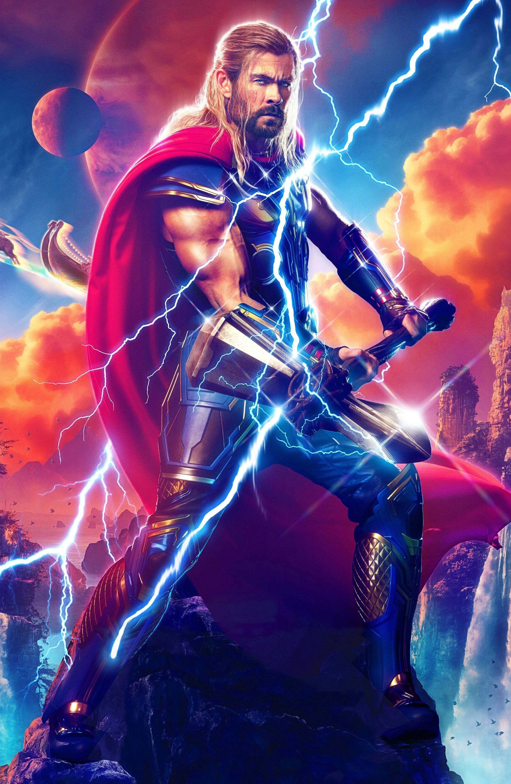
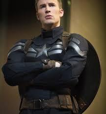
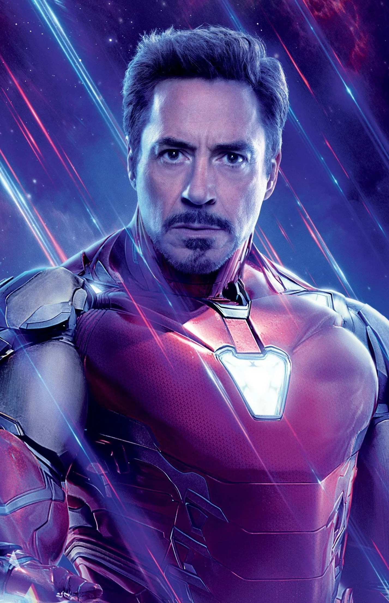
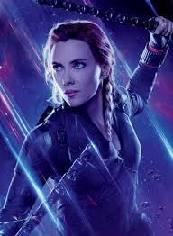
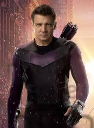

The best Avengers based on skills and power
This table is only based on personal opinion and the best is on the top the worst is on the bottom
| Image | Hero name and info | Abilities |
|---|---|---|
|  | Thor Odinson is the Asgardian God of Thunder, the former king of both Asgard and New Asgard, a founding member of the Avengers, and a former member of the Guardians of the Galaxy. When his irresponsible and impetuous behavior reignited an ancient war between Asgard and Jotunheim, Thor was denied the right to become king, stripped of his power and hammer Mjølnir, he was banished to Earth by Odin. While exiled on Earth, Thor found love with Jane Foster, and learned humility by saving his new friends from the Destroyer sent by Loki. | possesses superhuman strength, speed, agility, durability and immunity to most diseases. Thor's greatest weapon, and closest ally, is Mjolnir, an enchanted hammer forged from Uru metal, which has power over storms and can generate energy blasts known as anti-force. |
 |
Doctor Robert Bruce Banner, M.D., Ph.D., is a renowned scientist and a founding member of the Avengers. Highly respected for his work in biochemistry, nuclear physics and gamma radiation, Banner was tasked by Thaddeus Ross to recreate the Super Soldier Serum that created Captain America. However, Ross elected not to inform Banner what he was creating. During the experiment, Banner substituted vita radiation for gamma radiation and administered the serum on himself. As a result, the mild-mannered scientist found that when angered, provoked or excited, his body and brain would transform into a huge, rage-fueled, primitive-minded creature k | The Hulk's strength remains at the top level of all super human beings on Earth and increases exponentially as his anger grows. This strength grants him not only upper body prowess, but also the ability to leap great distances and land without harm to himself. |
|  | Steven Grant "Steve" Rogers is a World War II veteran, a founding member of the Avengers, and Earth's first known superhero. Rogers grew up suffering from numerous health problems, and upon the United States' entry into World War II, he was rejected from serving in the United States Army despite several attempts to enlist. Rogers ultimately volunteered for Project Rebirth, where he was the only recipient of the Super Soldier Serum developed by Abraham Erskine under the Strategic Scientific Reserve. The serum greatly enhanced Rogers' physical abilities to superhuman levels. After Erskine's assassination and being doubted by SSR head director Chester Phillips, Rogers was relegated to performing in war bond campaigns, where he posed as a patriotic mascot under the moniker of Captain America | After being infused with the Super-Soldier serum, Steve Roger's body reached the upper-most limits of human perfection in strength, stamina, agility, and durability. With training, he learned to use these traits in perfect unison in any given situation. |
|  | Anthony Edward "Tony" Stark was a billionaire industrialist, a founding member of the Avengers, and the former CEO of Stark Industries. A brash but brilliant inventor, Stark was self-described as a genius, billionaire, playboy, and philanthropist. With his great wealth and exceptional technical knowledge, Stark was one of the world's most powerful men following the deaths of his parents and enjoyed the playboy lifestyle for many years until he was kidnapped by the Ten Rings in Afghanistan, while demonstrating a fleet of Jericho missiles. With his life on the line, Stark created an armored suit which he used to escape his captors. Upon returning home, he utilized several more armors to use against terrorists, as well as Obadiah Stane who turned against Stark. Following his fight against Stane, Stark publicly revealed himself as Iron Man. | Iron Man does not have any superhuman abilities. Instead, he derives his strength from a powered armor of his own design. The armor is equipped with various weapons, which include "repulsor rays" in each palm that project particle beams as well as a stronger "unibeam" on his chest. |
|  | Natalia Alianovna "Natasha" Romanoff (Russian: Наталья Альяновна "Наташа" Романов) was one of the most talented spies and assassins in the entire world and a founding member of the Avengers. As a child, she was indoctrinated into the Red Room by General Dreykov, and briefly lived as the surrogate daughter of Alexei Shostakov and Melina Vostokoff while they were undercover in the United States of America. After the Destruction of the North Institute, she underwent extensive psychological conditioning, before graduating from the Red Room as a Widow. Working as an operative for the KGB, she was targeted by S.H.I.E.L.D., before given the chance to ultimately defect to the organization by Clint Barton by assassinating Dreykov. Romanoff succeeded, although having to use his daughter Antonia Dreykov's life as collateral damage would haunt her for the rest of her life. | Unlike many superheroes, Black Widow is not associated with superhuman powers. Instead, she underwent biochemical modification while training in the Red Room, increasing her physical prowess and slowing her aging. Black Widow is a master of hand-to-hand combat, with training in aikido, boxing, judo, karate, and savate. |
|  | Clinton Francis "Clint" Barton is an extremely skilled marksman, a former special agent of S.H.I.E.L.D. and one of the founding members of the Avengers. Known for his use of the bow and arrow as his primary weapon and his extremely keen eyesight and accuracy, which earned him the codename Hawkeye, Barton had become one of the best S.H.I.E.L.D. agents, responsible for the recruitment of Black Widow, with whom he developed a strong friendship. Assigned by Nick Fury into watching over the Tesseract, he was brainwashed by Loki and used as his pawn in his attempt to become king of Midgard. However, following the Attack on the Helicarrier, he was freed from Loki's mental controls by Black Widow and joined the Avengers to fight against Loki and the Chitauri army in the Battle of New York, ending Loki's invasion, before Hawkeye returned to his work at a S.H.I.E.L.D. | An expert acrobat, military-trained combatant, and master assassin, Barton can stand toe-to-toe with some of the best fighters around. He is also a master tactician and spy—the Avengers face quite a bit of difficulty when Hawkeye works for Loki and turns his plans against them. |